Mars 2021 – Février 2023
Périmètre, sources de données et questions structurantes
CA, produits, clients, transactions, références
Concentration, fidélisation, RFM, rétention
Comportements d’achat, synthèse, recommandations
Lapage est une librairie e-commerce dont nous analysons 2 ans d’activité pour identifier les leviers de croissance et les profils clients prioritaires.
3 questions structurantes :
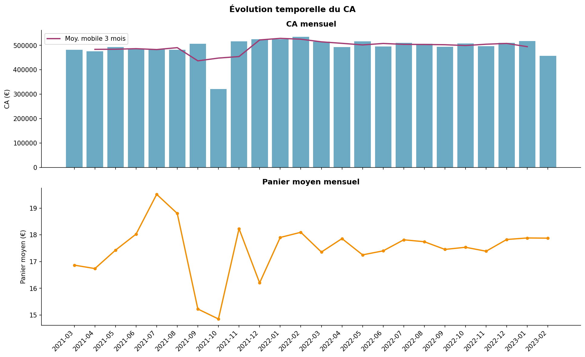
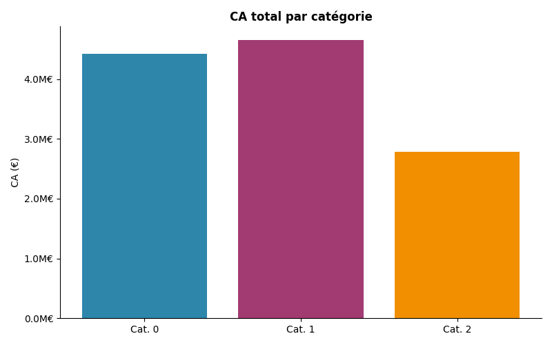
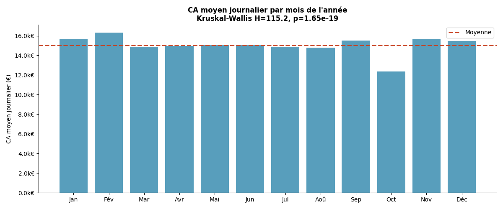
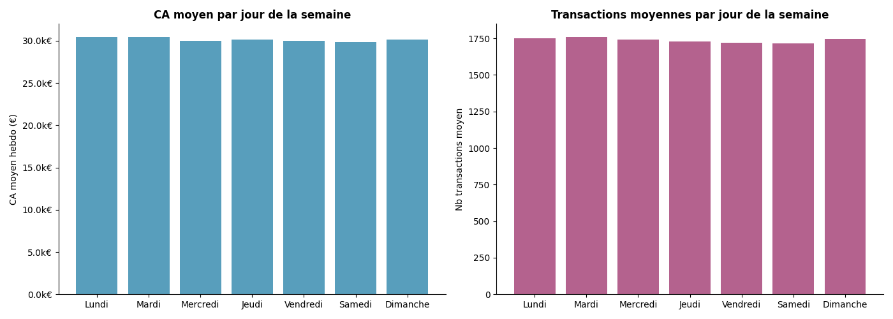
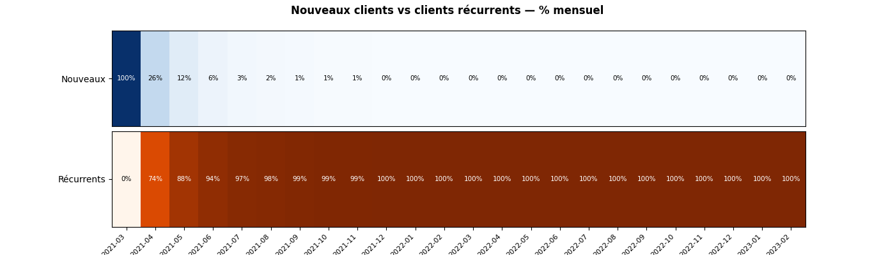
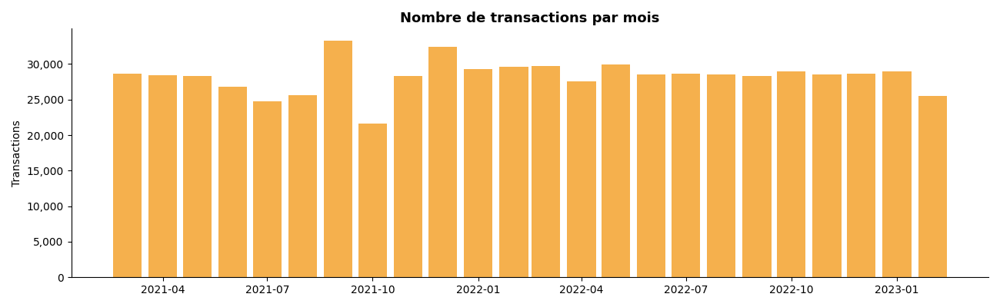
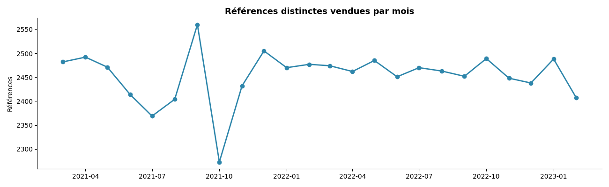
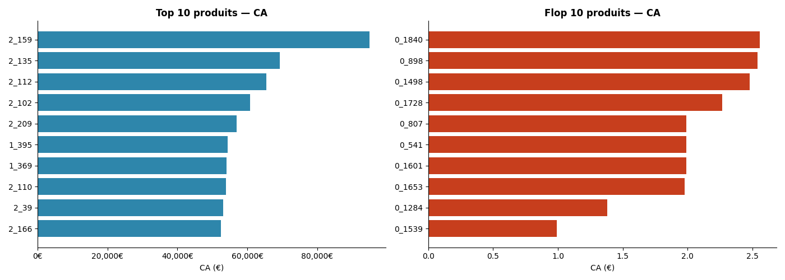
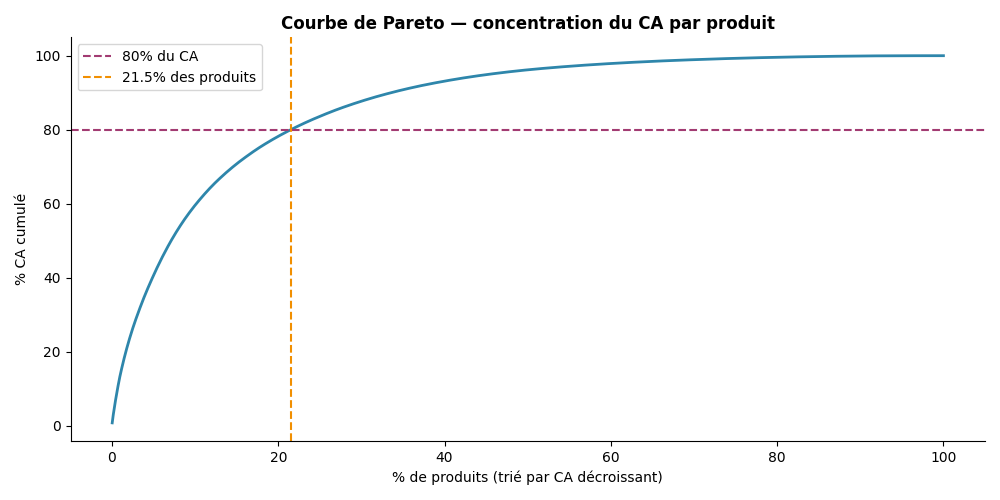
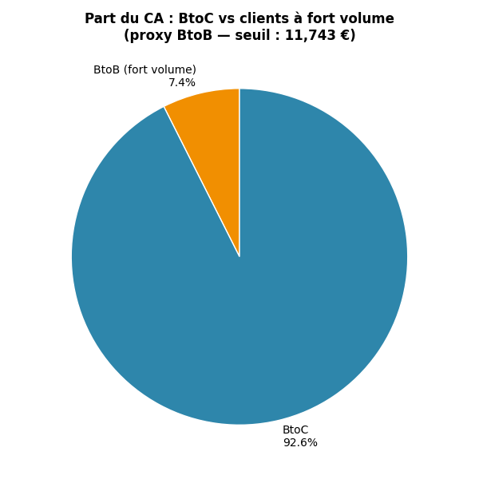
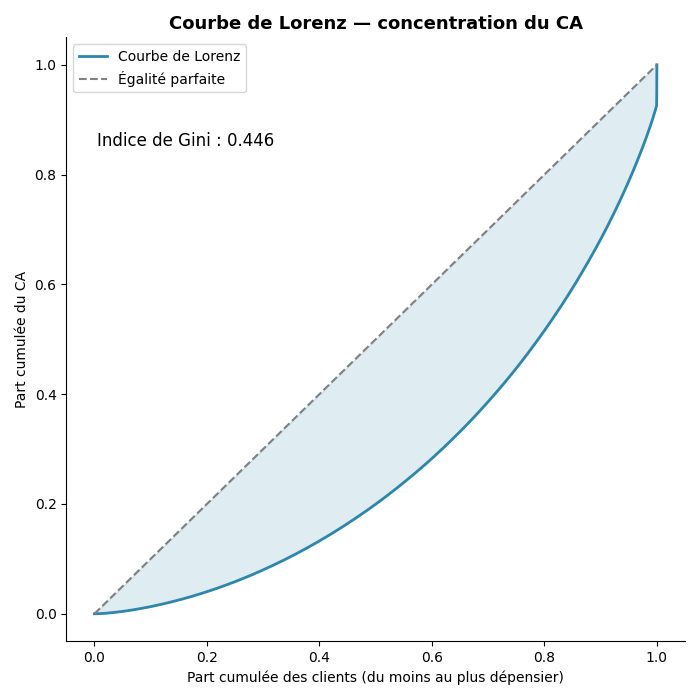
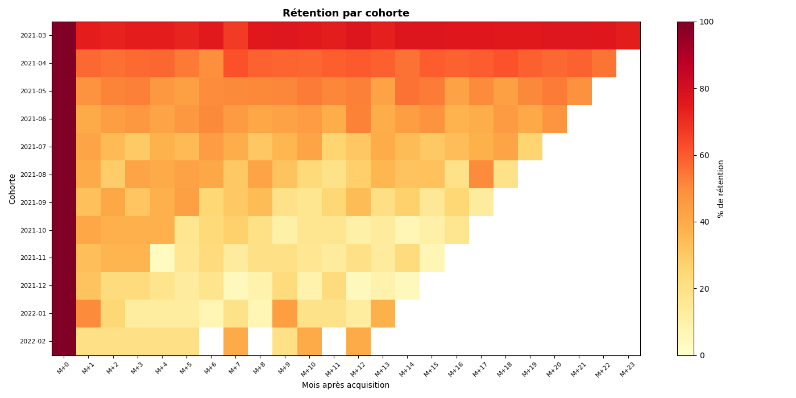
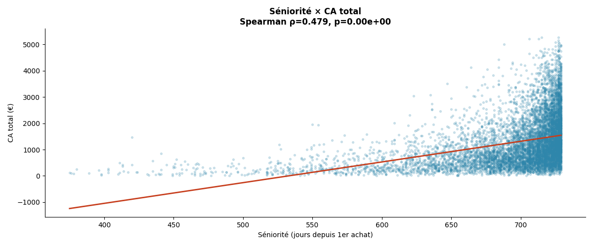
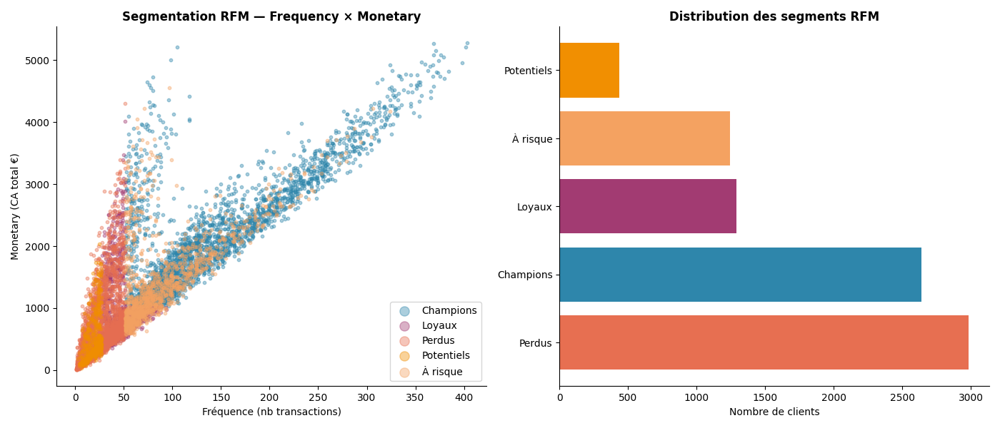
| Segment | Clients | CA moyen |
|---|---|---|
| Champions | 2 639 | 2 189 € |
| Loyaux | 1 291 | 963 € |
| À risque | 1 245 | 1 464 € |
| Perdus | 2 985 | 637 € |
| Potentiels | 436 | 521 € |
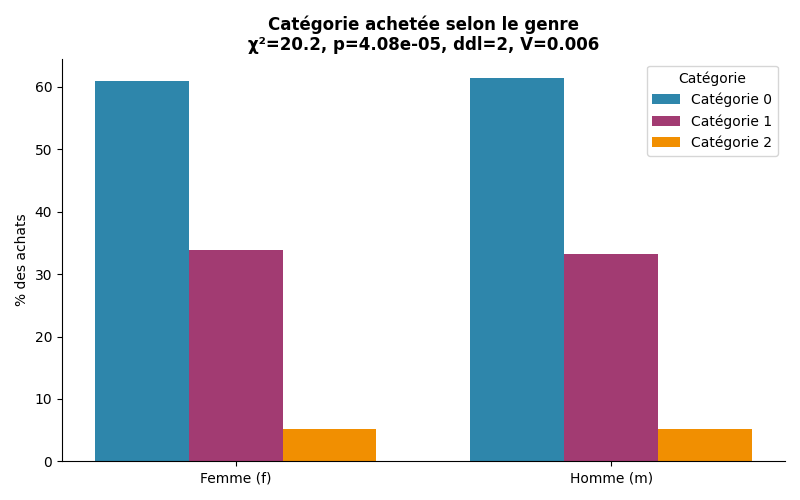
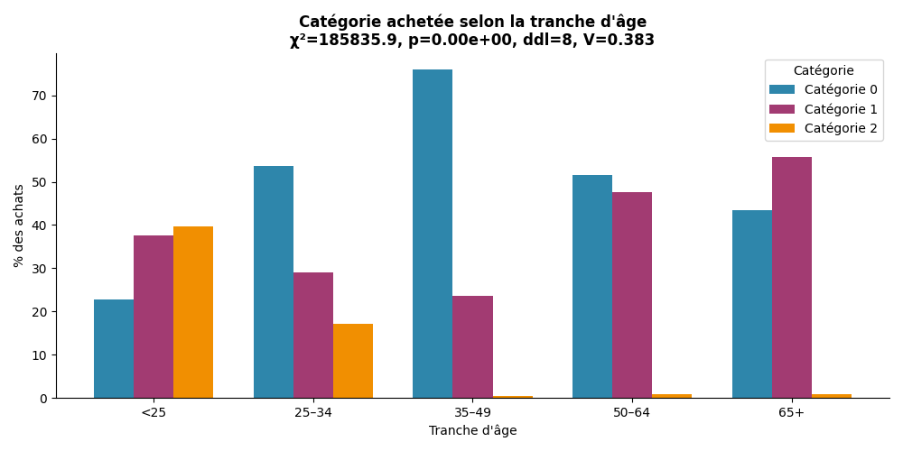
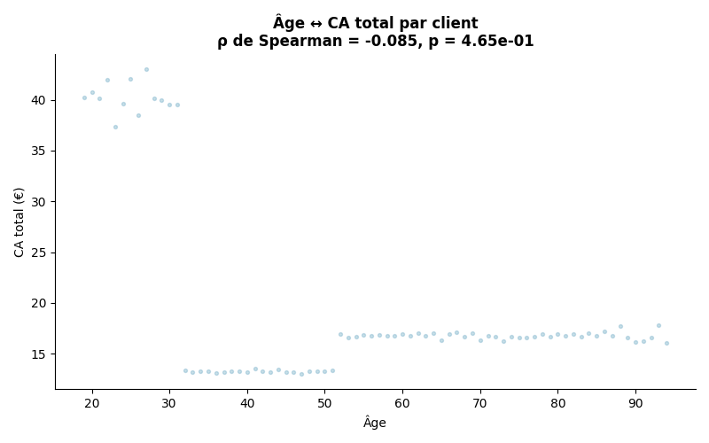
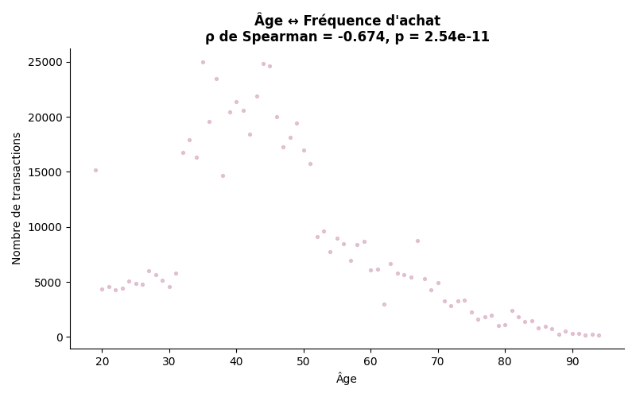
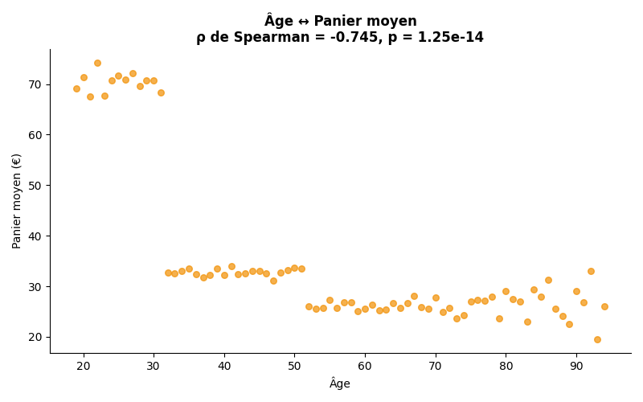
Activité
Clients
Corrélations
Signal fort
🔴 1 — Sécuriser le BtoB Suivi dédié, contrats cadres pour les 4 clients BtoB 7,4 % du CA sur 4 comptes
🔴 2 — Déclencher le 2e achat sous 30 jours Relance ciblée post-acquisition — email J+7, offre J+30 Rétention cohortes + RFM
🟠 3 — Concentrer l’assortiment Focus sur les 20 % de références motrices, déréférencer la queue Pareto + top produits
🟠 4 — Cibler par tranche d’âge, pas par genre Adapter les mises en avant catalogue selon l’âge — prédicteur validé Chi² tranche d’âge × catégorie (V fort)
🟡 5 — Activer les segments À risque et Perdus Campagne de réactivation ciblée sur 4 230 clients (RFM) CA moyen À risque : 1 464 €